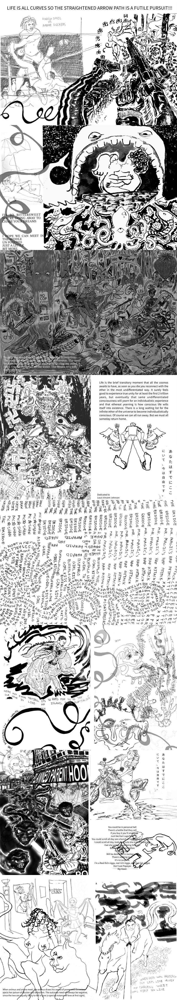
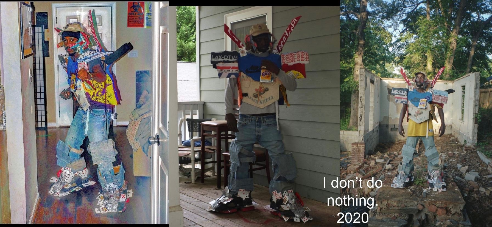

Ezekiel Robinson is an Artist, confronted by The dark, finally, something he may consume. And he could hear his own water trickling in the distance. He slipped, And noticed the thin damp film on the rocks had become ice Where the moonlight touched it. Still elated by the harvest, Ezekiel continued to eat the darkness, perhaps with more caution now, Periodically lifting his eyes, but never his head, never his mouth.. Ezekiel Robinson finds more comfort crawling, Changing the orientation of his body around his neck. Gyroscopically stabilizing his own head.
To reposition those eyes towards the sound of damp footsteps. From this distance, he could see your silhouette. Slowly, silently, and methodically slicing through his dark sinewy feast. Having the dark lightly fall off of your surface, wrapping your form first, like feathers. It reminded Ezekiel of the crows, and crows remind him of memory, of facial recognition, of the type of animosity that can’t develop from a photo but can be captured on film. A medium that REQUIRES and can only express the passage
of time. He contorted his body so that he may watch your approach while he simultaneously attempted to eat eat eat as much of the darkness as he could. Breathing became less of a priority as Ezekiel shoveled and slurped more darkness into his mouth leaving less and less space for air. You arrived at the orafice from which he was feeding quickly but motioned towards him so slowly. You wanted to watch him choking we suppose. And So Ezekiel choked and shoveled more violently. In hindsight it was just your gentle nature. You embraced his twisted body, while his focus was solely dedicated to consumption. Slowly but surely his neck began to unravel itself. Ezekiel’s body untwisted and straightened, his arms stopped their frantic flailing and shoveling, his mouth and neck slowly allowed more air, all while still consuming, slowly waining in manic desire. Until his lips finally began to purse and spit.
Something I may consume, the dark.
Ezekiel Robinson is an Artist, confronted by The dark, finally, something he may consume. And he could hear his own water trickling in the distance. He slipped, And noticed the thin damp film on the rocks had become ice Where the moonlight touched it. Still elated by the harvest, Ezekiel continued to eat the darkness, perhaps with more caution now, Periodically lifting his eyes, but never his head, never his mouth.. Ezekiel Robinson finds more comfort crawling, Changing the orientation of his body around his neck. Gyroscopically stabilizing his own head. To reposition those eyes towards the sound of damp footsteps. From this distance, he could see your silhouette. Slowly, silently, and methodically slicing through his dark sinewy feast. Having the dark lightly fall off of your surface, wrapping your form first, like feathers. It reminded Ezekiel of the crows, and crows remind him of memory, of facial recognition, of the type of animosity that can’t develop from a photo but can be captured on film. A medium that REQUIRES and can only express the passage of time. He contorted his body so that he may watch your approach while he simultaneously attempted to eat eat eat as much of the darkness as he could. Breathing became less of a priority as Ezekiel shoveled and slurped more darkness into his mouth leaving less and less space for air. You arrived at the orafice from which he was feeding quickly but motioned towards him so slowly. You wanted to watch him choking we suppose. And So Ezekiel choked and shoveled more violently. In hindsight it was just your gentle nature. You embraced his twisted body, while his focus was solely dedicated to consumption. Slowly but surely his neck began to unravel itself. Ezekiel’s body untwisted and straightened, his arms stopped their frantic flailing and shoveling, his mouth and neck slowly allowed more air, all while still consuming, slowly waining in manic desire. Until his lips finally began to purse and spit.
You're so sweet, your cigarette smoke taste like honey
Recently I’ve been thinking about celebrating, and celebrations in general. I was raised to love celebrations. Growing up, my mother would take my sister and I to our great grandmothers home in the middle of nowhere Georgia. My family would have cookouts what seemed like every week. Everyone in my family would be eating and drinking and laughing together. Every holiday was celebrated. Every birthday, every graduation. But even without an excuse or a justification there was always bound to be some sort of celebration. The times that I have come to live in have made the idea of celebration seem to me, unjustifiable. The overwhelming feeling of apocalyptic doom settles upon us all everyday. I currently feel like there are ways in which the world has already ended. The more troubling portion of that realization is that those failed parts of the world must have come to an end before I was born. My great grandmother lived in a post apocalyptic world and so did every other member of my family since their touching down in America. I would be surprised to find if there was ever a member of my family, regardless of the conditions of their life, or the condition of the society they inhabited, never found at least one moment to celebrate. The desire to celebrate does not come from the need to escape. Celebration is the first and final step to create a new world. Celebration occurs as the acknowledgement of present resources and potential. Regardless of this I still feel an overwhelming amount of guilt whenever I celebrate. Especially when I celebrate my own “achievements”. Celebrating artistic accomplishments is especially problematic for me. I'm constantly questioning what purpose my art is serving. Allegedly the function of good art is to inspire new good art. To continue humanity’s long creative history. And so it is my job as an artists to work and live to inspire creative pursuits. The inventor of the wheel would be happy to meet me? Is what it seems like i'm assuming. The level of fulfillment they would have to know that their art, their engineering has spawned an endless amount of subsequent creations. “Juneteenth Liberation Tank” is a celebration but it also represents my relationship with celebrating. A relationship I believe I share with others of a similar history
Recently I’ve been thinking about celebrating, and celebrations in general. I was raised to love celebrations. Growing up, my mother would take my sister and I to our great grandmothers home in the middle of nowhere Georgia. My family would have cookouts what seemed like every week. Everyone in my family would be eating and drinking and laughing together. Every holiday was celebrated. Every birthday, every graduation. But even without an excuse or a justification there was always bound to be some sort of celebration. The times that I have come to live in have made the idea of celebration seem to me, unjustifiable. The overwhelming feeling of apocalyptic doom settles upon us all everyday. I currently feel like there are ways in which the world has already ended. The more troubling portion of that realization is that those failed parts of the world must have come to an end before I was born. My great grandmother lived in a post apocalyptic world and so did every other member of my family since their touching down in America. I would be surprised to find if there was ever a member of my family, regardless of the conditions of their life, or the condition of the society they inhabited, never found at least one moment to celebrate. The desire to celebrate does not come from the need to escape. Celebration is the first and final step to create a new world. Celebration occurs as the acknowledgement of present resources and potential. Regardless of this I still feel an overwhelming amount of guilt whenever I celebrate. Especially when I celebrate my own “achievements”. Celebrating artistic accomplishments is especially problematic for me. I'm constantly questioning what purpose my art is serving. Allegedly the function of good art is to inspire new good art. To continue humanity’s long creative history. And so it is my job as an artists to work and live to inspire creative pursuits. The inventor of the wheel would be happy to meet me? Is what it seems like i'm assuming. The level of fulfillment they would have to know that their art, their engineering has spawned an endless amount of subsequent creations. “Juneteenth Liberation Tank” is a celebration but it also represents my relationship with celebrating. A relationship I believe I share with others of a similar history
Designed for the protection of young black men, it is a mechanized, mobile suit. It is constructed out of repurposed fabric, sneakers, denim, plastic, playing cards and cardboard. It consists of a helmet, chest armor, and two leg gauntlets with boots. I made this work as a direct response to the $1200 coronavirus stimulus check issued by the federal government. The check was meant to protect individuals from the economic repercussions of the virus. That issue of protection felt salient to me as I thought about the toxic aspects of black consumerism. As a young man who moved from a rural community to an urban one, I have at times attached my self worth directly to the symbols I placed on my body. I don’t do nothing reflects the weight of corporate logos and institutions on the black self image while also addressing the feeling of necessity that black people often feel in acquiring branded possessions that offer a type of protection from the oppressive forces that all black people face. If Nike or Ralph Lauren were to create suits of armors with their logos, it is not hard to imagine them being sold for $1200 or more. What does it mean that this amount, decided upon by the Trump administration, is then deemed the cost of protecting black life?
The A.B.S. is my attempt to make something that “works” autonomously. It can be turned on and left, it doesn't need me to operate. It also highlights the irony of “work”. Fundamentally it's just a wheel that turns. I've never felt like more than just a wheel turning at any job I've ever held. Beyond my personal experience with “work” it also highlights our biases against not only the homeless, but anyone that seeks help in a society that is designed to remove empathy from each of us and replace that empathy with the blind desire to collect life tokens (dollar bills). Even myself acknowledging this, I would quickly trade my last bit of empathy for a 2020 amg benz truck, or the wealth to acquire one of my own, easy. I would quickly trade my humble position in this society for heated seats, a turbo mode, and some cold AC for the muggy Georgia weather. To be able to roll up my tinted windows and block both the smell and the sound of those depraved folk walking up to my window to ask me for a dollar, or even just 37 cent. I’d do anything to tint my windows dark enough as so they couldn’t see me enjoying that new Yak Gotti “slatt walk” blasting from my custom Bose stereo sound system driving down metropolitan, prolly enjoying 10 pieces of some deliciously fried, thoroughly sauced, morsel of seafood being fed to me by the pristinely manicured hands of my lover, who’s “new body” is still wrapped in bloody bandages, her body just as fresh off of the surgeons table as my shrimp is fresh off the coast of Maine. But whatever, basically the thing works, but it's a beggar so it doesn't work, that's the joke. There's a few more jokes I could get into, like the impending automation of the “professional” class or the pandemic being used to justify an even more cold and unfeeling world, by design. But in the interest of concision and in the anticipation that i will speak another day, I’m finna stop.
Curl, breakage, and the ephemerality of growth. Tree limbs look so lighthearted, until they fall. A tree swaying in the wind has a jovial appeal. The wind pushing its trunk backwards, bending. It looks like the trees are laughing at us. I’m made of soft flesh but for some reason I cannot bend so far. Unless I’m laughing. Ho ho ho baby! It’s Christmas time! All the time! On my side. Dysfunction is our gift. And for those of you that don’t behave: YOU ARE FURTHER NOTIFIED THAT THE LANDLORD HEREBY ELECTS TO DECLARE THAT FORFEITURE OF YOUR LEASE UNDER WHICH YOU HOLD POSSESSION OF THE PREMISES IF YOU FAIL TO PERFORM OR OTHERWISE COMPLY SUCH NON COMPLIANCE WILL INSTITUTE LEGAL PROCEEDING TO RECOVER _________ AND POSSESSION OF SAID PREMISES. Lucky me, my pockets got the knots. My walls, my floors, my roof, all got the knots. Even when you can’t find me, you can see through me, you can always find the effigies I never meant to leave behind. Check the drain. I’m just a budding off of gods curly little head. I hit the ground and continued to grow. Looping with all the other broken loops. Let’s go back and forth honey bun, ok I’ll start- You laugh too much and that’s the fucking problem My shit is all over the place and that’s called SINCERITY. You still think things happen on accident, these things are Sincerely Broken Sacrifice is the hallmark of true love. Everything I lost on the way here is insignificant, now that I know I’m here. You’ve been beaten and your assailants left the blood behind for me to find. Tell me something I can do to redeem you and don’t use the word “revenge”. Let’s focus on you. First, let’s clean up this mess. Ok now back to you. You’re only 7 percent blood anyways. It’s mostly just water. Those stains will come right out. Now let’s soak those knots. I washed your clothes, and folded them. You probably want to bathe alone. I would give my life for yours. Sincerely, I would lay and let them kill me instead. I will live my life for yours. I won’t lay and kill myself. “I heard a woman weeping on the train, I tried to find her in my train car, Only to discover the weeping came from the train itself. Something about this particular journey must have Brought the machine to tears.” Let me comb your hair. Look at all you had to let go. Look back at me but you don’t have to smile. I remember when you grabbed my chin and kissed my lips. I drew it on a sheet of paper. Now my memory has mass and weight. Height and width. Value and white space. Now my memory can burn and be used as the kindling to Keep us warm. My memory can fold now. My memory can sop up a watery mess. My memory can be hung. Framed. Put up on display and sold. And ultimately I have to thank the trees that were surveilled their entire lives, until they were eventually mowed down for the sake of industry. And that newly barren, sap soaked land Is the cost of not letting go
good is he who gives and recieves naught.
Create Yourself
Contact
Ezekiel Robinson 7062515119 1twopub@gmail.com.